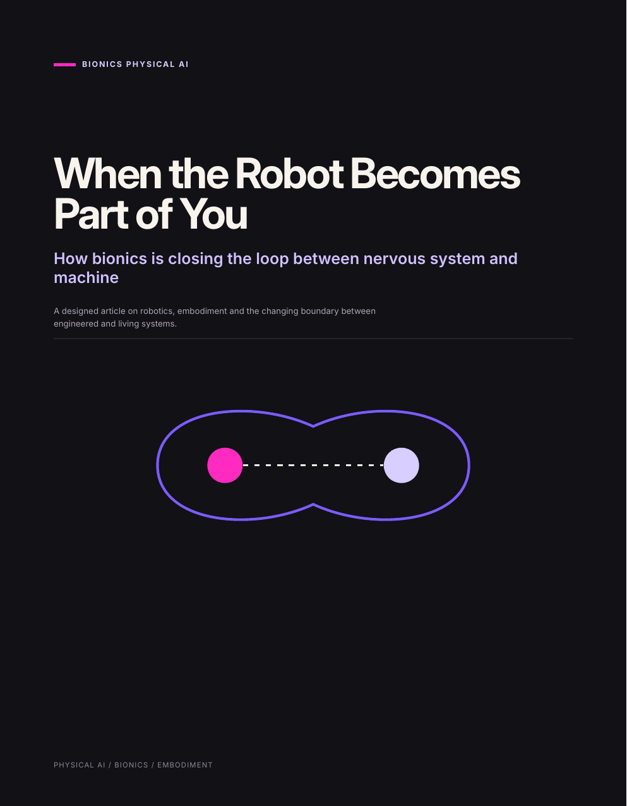

BIONICS PHYSICAL AI · PART 04 OF 05
When the Robot Becomes Part of You
How bionics is closing the loop between nervous system and machine

Designed article · PDF · 6 pages
Read part 04.
This article follows the boundary from the human side: osseointegrated prostheses, neural control, artificial sensation, embodiment, AI-assisted action and augmentation. The defining architecture is a loop between nervous system, machine and environment.
The question
What changes when intention can flow into a machine and sensation can flow back?
Integration happens across several boundaries at once - mechanical, neural, sensory, cognitive and agentic. The important question is not simply where the hardware sits, but whether the loop closes without eroding the user’s sense of agency.